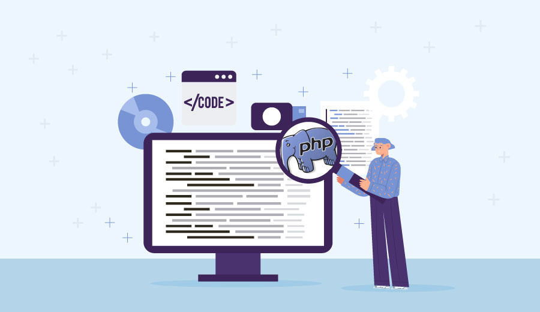

Indicações de back-end
PHP
Sites:
Neste artigo vamos mostrar a importância da sigla PHP, além da estrutura e vantagens dessa linguagem.
O Que é PHP? Guia Básico de Programação PHP
Tutorial:
Aprenda PHP, uma ferramenta poderosa para criar páginas da Web dinâmicas e interativas.
Tutorial PHPVideo:
Aprenda PHP de maneira simples e rápida
PodCast:
O episódio fala sobre a linguagem PHP. Debate sobre a visão de mercado ao redor do mundo e dúvidas sobre a linguagem.
MySQL
Site:
Neste artigo, você vai saber mais sobre O Que É MySQL. Você também vai descobrir como ele funciona, como se diferencia do SQL e por que a tecnologia é tão popular entre os usuários de internet.
O Que É MySQL? Guia Para Iniciantes
Tutorial:
Veja neste artigo algumas técnicas para você utilizar as funções básicas (SQL e peculiaridades) do Sistema de Gerenciamento de Banco de Dados Relacional (SGBDR) MySQL.
MySQL Tutorial
Video:
Este tutorial fornece uma introdução aos bancos de dados, SQL e banco de dados relacional de código aberto - MySQL.
PodCast:
Neste episódio do DatabaseCast, o podcast brasileiro sobre banco de dados, Mauro Pichiliani e Wagner Crivelini entram em uma reunião com o consultor Airton Lastori para conversar sobre o que o MySQL tem para oferecer aos desenvolvedores.
Natalia Gass